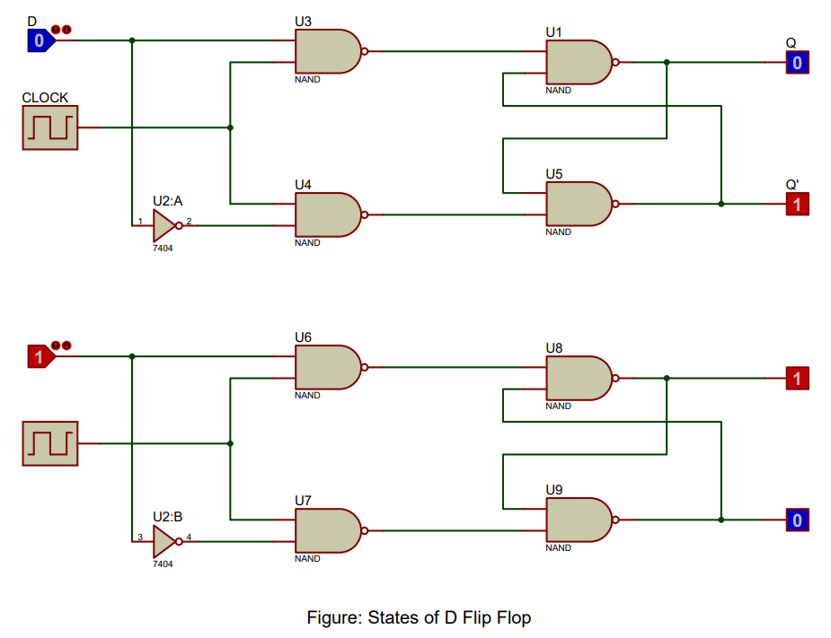

D Flip Flops: The Essence of Data Storage in Digital Systems
Among the array of digital electronics devices, D Flip Flops are a fundamental component. The D in D Flip Flop stands for "Data", referring to the single data input it possesses. This type of flip flop or latch operates with one input (D), a clock input, and two outputs (Q and Q'). The D Flip Flop's primary functionality is to transfer the data from its input to its output.
The operation of D Flip Flops is encapsulated in the following Boolean expressions:
$Q = D$
$Q' = D'$
The above expressions represent the core functioning of D Flip Flops, i.e., the output 'Q' essentially mimics the data input 'D'. The inverse of the data input 'D' is the output 'Q'.
D Flip Flops excel in scenarios requiring data storage and transfer, owing to their straightforward data flow. This quality makes D Flip Flops a popular choice in various applications such as shift registers, memory units, and data buffers.
As the digital realm continues to advance, the need for reliable and efficient data storage and transfer mechanisms, like D Flip Flops, rises. These devices are central to the operation of more complex systems, such as microprocessors, digital signal processors, and other data-intensive applications.
Understanding the functionality of D Flip Flops, their Boolean expressions, and applications offers a comprehensive perspective into the world of digital electronics and computer architecture.
Deciphering the Functionality of D Flip Flops
D Flip Flops are comprised of logic gates, including AND, OR, and NOT gates, that collaboratively facilitate the Flip Flop's binary operations. Understanding their inner workings is essential to utilizing their potential and contributing to the development of digital systems.
Having explored the theoretical aspects of D Flip Flops, it is now time to apply this knowledge practically. In the following sections, we will demonstrate how to verify the truth tables of D Flip Flops using Proteus software. This versatile tool enables the simulation of electronic circuits, providing an interactive learning experience and a deeper understanding of D Flip Flops. This practical approach highlights their critical role in digital systems, appealing to a wide audience, from beginners to experienced professionals.
Procedure of Doing the Experiment
D Flip Flop
Title
Implementation of D Flip Flop Using NAND Gates and NOT Gate in Proteus Software
Aim
To implement and validate the operation of a D Flip Flop using Proteus software simulation with 7400 NAND gate IC and 7404 NOT gate IC.
Requirements
Proteus software, 7400 NAND gate IC, 7404 NOT gate IC, clock signal generator, Logic State, and Logic Probe tools.
Theory
A D Flip Flop, also known as a Data or Delay Flip Flop, stores one bit of data. It has a data input (D), a clock input (CLK), and two outputs, Q and Q' (Q bar). When the clock pulse is high, the Flip Flop becomes transparent and the output equals the input at D. When the clock pulse goes low, the last value at D is stored at the output. The Flip Flop is implemented with a combination of NAND gates (7400) and a NOT gate (7404). The behavior of the D Flip Flop can be understood through its truth table.
Truth Table of D Flip Flop
| Clock | D | Q (Next State) | Q' (Next State) |
|---|---|---|---|
| 0 | x | Q (Previous State) | Q' (Previous State) |
| 1 | 0 | 0 | 1 |
| 1 | 1 | 1 | 0 |
Procedure
- Open Proteus, create a new schematic capture.
- Add the 7400 NAND gate IC, 7404 NOT gate IC, Clock Signal generator, Logic State, and Logic Probe (Big) from the pick device menu to the dashboard.
- Place the NAND gates, NOT gate, Clock Signal generator, Logic State, and Logic Probe tools onto the schematic.
- Connect the components to form a D Flip Flop: D input to a NOT gate (7404), and the outputs of the NOT gate and D input to a NAND gate (7400). Connect the clock signal to the other inputs of the two NAND gates. Connect the output of the first NAND gate to the second input of the second NAND gate, and the output of the second NAND gate to the second input of the first NAND gate. The outputs of these NAND gates are Q and Q'.
- Run the simulation and observe the Q and Q' outputs for all possible input combinations of D and Clock signal.
- Verify the simulation results against the expected truth table of a D Flip Flop.
Result
The simulation results match the D Flip Flop operation, validating its correct functionality.
Conclusion
The D Flip Flop has been successfully implemented and its operation verified using Proteus software, confirming its proper operation as a memory device in digital circuits.
FAQs
Here are some frequently asked questions about D Flip Flops and their verification in Proteus.
1. What is a D Flip Flop?
A D Flip Flop is a type of flip flop or latch that has a single data input (D), a clock input, and two outputs (Q and Q'). It is used for data storage and transfer, where the output Q mimics the data input D, and Q' is the inverse of D.
2. What is the function of the clock input in a D Flip Flop?
The clock input in a D Flip Flop controls when the data is transferred from the input to the output. When the clock pulse is high, the output equals the input at D, and when the clock pulse goes low, the last value at D is stored at the output.
3. How is a D Flip Flop implemented using logic gates?
A D Flip Flop can be implemented using NAND gates and a NOT gate. The D input is connected to a NOT gate, and the outputs of the NOT gate and D input are connected to a NAND gate. The clock signal is connected to the other inputs of the two NAND gates, and the outputs of these NAND gates are Q and Q'.
4. What are the applications of D Flip Flops?
D Flip Flops are widely used in data storage and transfer applications such as shift registers, memory units, and data buffers. They are also essential components in complex systems like microprocessors and digital signal processors.
5. How can I verify the operation of a D Flip Flop in Proteus?
To verify the operation of a D Flip Flop in Proteus, you need to simulate the circuit using the necessary logic gates, and observe the outputs Q and Q' for all possible input combinations of D and Clock signal. Compare the simulation results with the expected truth table of a D Flip Flop.
Challenge Yourself
Enhance your knowledge and skills related to D Flip Flops by attempting these challenges.
1. Implement a JK Flip Flop using a D Flip Flop
Try to create a JK Flip Flop using a D Flip Flop. Understand the differences between the two and learn how they can be interconverted.
2. Design a Shift Register using D Flip Flops
Create a shift register circuit using D Flip Flops. Simulate it in Proteus and observe how the data shifts through the register with each clock pulse.
3. Create a Frequency Divider using a D Flip Flop
Design a frequency divider circuit using a D Flip Flop. Analyze how the frequency of the output signal is related to the frequency of the input clock signal.
4. Explore the Role of D Flip Flops in Computer Memory
Research and understand how D Flip Flops are used in computer memory systems. Learn about their role in storingdata and how they contribute to the overall performance of computer systems.
5. D Flip Flop Simulator
Write a program in a programming language of your choice to simulate the behavior of a D Flip Flop. Take the data input 'D' and clock input from the user and display the outputs (Q and Q').